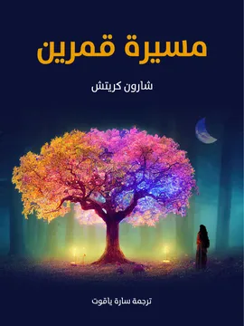

مسيرة قمرين

قراءة عربية أصلية محددة النطاق في الصفحات 9 إلى 13 من ملف PDF المرتبط، وليست تلخيصا كاملا للكتاب. نناقش ما تدعمه هذه المقاطع فقط.
قصة تشبه الجدار الجصي
تحكي سالامانكا قصة صديقتها فيبي لجديها في سيارة تقطع ألفي ميل، وتدرك وهي تحكي أن قصة فيبي تشبه الجدار الجصي في بيتهم القديم: تحته حكاية أخرى، حكايتها هي مع أمها التي رحلت في صباح من أبريل ولن تعود. تكتب كريتش عن الفقد بصوت فتاة تدّعي القوة: أب يكسر الجدار قطعة قطعة كل ليلة وهو ينتظر خبرًا، وجدة تعصر المناديل فرحًا برحلة ستكون فرصة لمرافقة «صغيرتها المفضلة»، وعنوان الكتاب مأخوذ من حكمة هندية أمريكية: لا تحكم على أحد قبل أن تسير في دربه مسيرة قمرين.
زاوية وحدود القراءة
قراءة موجزة من ص ٩ إلى ص ١٣ من أصل ١٩٨ صفحة، تعرض الفصلين الأولين وبداية الرحلة، لا الرواية كاملة.
الطبعة والقراءة
صدرت هذه الترجمة عن مؤسسة هنداوي عام ٢٠٢٢. جميع حقوق النشر الخاصة بتصميم هذا الكتاب وتصميم الغلاف والترجمة العربية محفوظة لمؤسسة هنداوي.
تنزيل PDF المجاني ↓ القراءة والمصدر الرسمي ↗